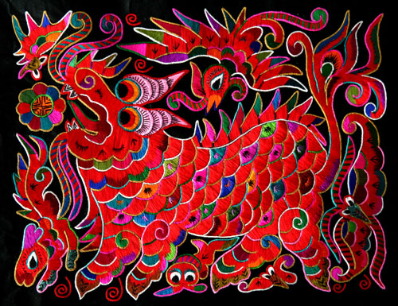
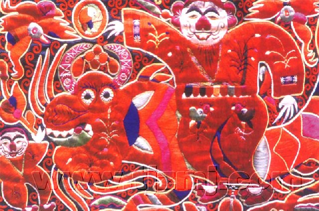

苗族刺绣历史悠久、选题广泛、内容丰富，善于用变形、夸张的造型，独特的工艺手法（如辫绣、绉绣、破绣、锁边绣等）生动地刻画了众多人物、动物、植物的优美形象，充分展示了苗族人民对美的独特创造。正如著名艺术大师刘海粟称赞说：“苗女刺绣巧夺天工，湘绣苏绣比之难以免俗”。
县境内苗族传统手工艺，主要有挑花、刺绣、织花、剪纸、银饰等，这些工艺一代传给一代，因而保存了浓厚的传统风格。虽然在交通便利和商品比较流通的地区受了外界的影响而起了一些变化，但始终没有失掉固有的纹样形式，仍然保留着独特的风格。
从纹样内容看，所采用的植物图案或动物图案，都与苗族的生活结合得很紧。构图的设计，纹样的安置，都不是生硬的拼连，而是既灵活又巧妙地组合。
苗族妇女往往用图案来反映她们的审美观，通过形象的比喻来寓意她们，如花，象征美好的事物和少女；鸟，象征自由和快乐；鱼，象征子女繁衍；石榴，象征儿子兴旺；钱币，象征富贵；万字不封口（苗语称“虾翁”，意为水车），象征富寿不封顶，吉祥无止境；寿字，象征幸福无边；“涡妥”，象征怀念远祖；“六耳结”，象征男女爱情。苗族妇女们挑花刺绣、织锦、剪纸等等工艺品中的图形与纹饰，大致可以分为祈求吉利，体现民族意识，表示庄严，怀念远祖，反映文化交流，美化生活方面。表现的方法有方形、圆形、椭圆形、涡妥纹、三角形、菱形、多角形等等；线条则有直线、曲线、水波纹等。变化多端，不拘一格。如蝴蝶本意在于“寻根”，它绣于十二蛋；祈求吉利方面，石榴象征多子，桃子祈求长寿；一双鸟表示忠贞的爱情，喜鹊显示吉庆，“蝠”、“鹿”即多福多禄。有的选择这个图式，不选那个图式，都根据她们审美的情趣，和追求的思想来决定的。苗族人民热爱劳动、热爱生活，聪明智慧，富于想象，善于观察和捕捉客观事物的特征，进行艺术加工，制成服饰，用以美化自己，增加生活乐趣和快感的反映。流传在台江境内的传说故事，便生动地说明苗族人民上述一切特征与心态。故事说： “以前没有花衣，后来才有花衣。怎样才有花衣呢？据说有个后生，到坡上猎获了一只锦鸡，带回来交给妈妈。老妈妈觉得锦鸡色彩模样实在美，飞针走线仿着锦鸡的羽冠，挽起高耸的云髻；仿着锦鸡的翅膀，绣成美丽的花袖；又仿锦鸡的五彩尾羽，制成百褶的围裙和飞舞的飘带；那锦鸡秀丽的双腿，恰似姑娘打扮的绑腿。从那时起，苗家姑娘便像山中的锦鸡一模一样的美丽。”
为了适应刺绣方法，纹样的形式有的采用几何图形。总之，妇女们所追求的是总体的统一，要求形态有利于她们的刺绣方法和所要的安放的位置，而不受物体原有形态的拘束。因而制作的成品绮丽工整，装饰味浓，造形单纯质朴，将自然形象通过提炼、蝉变，创造，参生了艺术形象，溶入到人们的理想和心愿之中，在国内外享有盛誉，成为我国文化艺术宝库中的重要组成部份。以下分别加以叙述：
1、挑花：挑花苗语称“挂刚”，是县内苗族较古老的传统工艺，亦是苗族妇女的专门工艺。姑娘们从七、八岁起，就开始学习挑花刺绣，到了十四、五岁，就已掌握了相当的技术。传授方式都是母教女，姐教妹和互相学习，没有拜师学徒的习惯。挑花艺术是苗族社会评价妇女是否能干的标准。一个苗族妇女，长大后不会挑花刺绣，不但被社会所讥笑，甚至在婚姻问题上也会受到影响。 挑花不先起样，数纱挑刺。针法有平挑花和十字花两种，即在平布上面依纱眼用绣花针扣上十字形，然后以此为骨架，填置上多种需要花纹，采取反面挑花正面看手法，其优点有二：一是保持清洁；二是便于打结。构图多是几何图形，也有动植物的几何图案。其结构主要有对称式、交叉式、二方连续式、斜菱形、单独纹样等等。图案花纹既规整而又变化多姿，给人以舒畅愉快的感觉。题材主要是来自苗族人民的生产、生活和传统故事中，与苗族有关的事物，如蝴蝶、狮子、龙、鱼、石榴、桃子、四瓣花、蕨菜等。从这些花纹中，可看出与县境内苗族所处的地理环境有极大关系，因为她们居住高山，所见到和所熟悉的就是以上这些动植物，极少用她们所未见的事物，如玫瑰之类作图案。图案色调有大红、粉红、翠绿、中黄、蓝和白等。但以大红、粉红、净白为主调，间配其它对比相称的颜色镶边，看起来美丽悦目。由于她们善于搭配，对比巧妙，因而画面显得十分绮丽多彩。她们懂得用色的顺序，配色的规律，色性的过渡，如红与蓝不能并用；红与黑不能为伍；黄与粉红相配，显得富丽热烈；白与蓝并用，感觉素静。然而她们用色主要倾向于暖色，即以白、红、黄为主，适当配以绿、蓝，所以其图案画面给人以热烈而又古朴的感觉，表现了苗族人民气质与风貌。 挑花图案主要用于妇女的服饰。妇女整套服装有上衣，袖边、领边、头帕、围腰、腰带、裙、绑腿等，都无不以挑有花为美。不过有些地区花挑得较多，有的地区花挑得较少，如嘎东型的女装，几乎全挑有花。方鸠型的古装和现在老年妇女穿的衣服，也挑有较多的花。目前年青姑娘们的盛装挑花也不少。方秀、方白一带的女装，衣服上则无花饰，只在围裙帕下端的两角和衣服下摆的边缘，以及交领和袖口等处，略挑有花纹。
挑花原料如布与丝线，多出于苗族妇女之手。妇女们几乎人人能纺、能织、能染、能绣，直到现在，苗族妇女挑花仍用自己纺织、自己染制的土布。这种土布，经纬分明，便于挑绣。虽近年也有用市场上阴丹布和细帆布的，但必竟少数。线也是通过自己养蚕、缫丝、染色而得，但色样不多，因而近年多用市场所卖花线。这样一来，如今挑花，既古朴而色鲜，更加美观。 2、刺绣：刺绣苗语称“能贺”或“能蒙” 。刺绣工艺在台江各型流行得十分广泛，具有悠久的历史。它不同于湘绣、杭绣、苏绣和川绣，也不同于黔绣，它具有独特的民族风格和艺术技巧。纹样内容是相当广泛的，其中以龙、凤、虎、狮、马、蝴蝶、鱼、鸟类、花果类等为多数。尽管内容如此广泛，但其纹样形式是统一的，一般都采用水云纹，很多形式成S状。运用水云纹是台江苗族刺绣纹样中最大的特点，同时运用得相当成功，尤以方囊型最为擅长，这种纹样让人看了，能有轻松、活泼、协调的感觉。刺绣的方法也是多种多样的，计有平绣、编卷、缠绣、打子、堆花、贴花等六种。
平绣：苗语称“贺刀勒”。其法先把剪好的纸花贴在绣花布上或缎子上，然后将花线照着剪纸花纹样绣，直至绣满为止。这种绣用色不太复杂，习惯以一种色为主，比如蓝色或红色。外配几种不同的色度。
方囊型的绣法是：将丝线回散，即一根普通的丝线分散成几根细线，然后以这些细线来绣。工作相当细致，但不经磨擦，容易毛烂。方你、方鸠两型，二、三十年来也逐渐采用平绣，但不将丝线剖散，和湘绣的绣法类似。嘎东、方黎型不常用平绣。
编卷：苗语称“贺刀”。其法为：先把剪 纸花贴在缎子上，再以八根、九根或十三根彩色丝线编成宽窄不同的小辫条（每根辫条多数只用一种颜色），然后将这些小辫条由外向里，一圈一圈地平铺在纸花上，另用一根同色丝线把它钉紧，即成编绣。若将小辫条挤皱后，再如法钉紧所成的皱绣，苗语称“贺合”。这两种绣非常精致，费工较多，制一对衣袖花需两个多月时间，所以一般只用在盛装上。这两种刺绣艺术，现在盛行于方你、方鸠一带地区。 缠绣：苗语称“贺耶”。绣法也先用剪纸花贴在缎子上，再用两颗各穿有线的针来绣。即甲针向乙针缠线，乙针被缠好线后向下刺，回针上来又为甲针缠线，甲针再往下刺，两颗针这样互换着，绣出来的效果和“编卷”中的平铺绣成的编绣相类似。这种绣法花工太多，绣一对衣袖花需要两个半月左右，比编卷费时多些。由于花工太大，过去盛行用的方鸠一带，现在都不大用了。方囊型盛装红衣（欧象）的花纹边缘，有的也用缠绣的方法绣上一圈围着，但只用一颗针操作。 堆花：苗语称“亮洒”。一般是用各色绫子剪成小三角形，再把下两角向内折成带尾的小三角，然后将它们在一块底布上堆迭成花纹，用丝线钉固而成。过去方黎型一等盛装的花饰，均用此法制作。方囊和方你型盛装领花，是用堆花制作而成。
打子：苗语称“秋波”。先用剪纸花贴在底布上，绣时，针从背面向正面刺上来后，便将针尖在丝线底脚卷上两转，然后再刺下去，针针如此，每绣一针，丝线就在面上卷结成一个圆圈。绣好后，呈现出许多小圆点。花纹就是由这样无数的小圆点组成。这是方黎型独有的刺绣方法。
贴花：苗语称“奢榜”。作法是将彩色布或缎子剪成花朵，再向其他衣服贴上去，然后在花纹的边缘上滚个边就行。贴花使用不很普遍，用于衣物上面也很窄。只是方黎型用于背带角，方鸠用于围裙帕的下缘（左、中、右各一朵），翁芒型用作背带花。 上述各种挑刺方法中，有的地区的衣物只用一种，有的地区的衣物同时采用好几种。如方你型 的盛装就有平挑、编卷、堆花等；方囊型的盛装 就有平绣、编织、堆花、缠绣等。所不同者，只是某个地区以某种方法为主，某种衣服又以某种刺绣为主罢了。
3、织花：苗语称“丽榜”。编织的花饰花纹，多属连续的几何图形，外部多用平行线条，内面多用菱形，三角形或单线曲折，有的也杂有平行线条。在几何图案中，有的也巧妙地运用了鸟、蝴蝶等形象。这种花饰多用于衣袖、及领、衣肩等部位，或者是织的花带。嘎东型十六、七岁以下姑娘的衣背也是用编织的花块。编织的花饰是用斗纹布的机子织，经线多半深蓝色，纬线是各色花线。织法和斗纹布一样，每织成一段便加上几根稻草作记号，俟整机织花织完后，按稻草记号剪下来用。织的速度很慢，方黎型需六至二十多天才完成一对衣袖花（便装和盛装花纹的繁简不同，时间也就不一样）。方囊型的衣服虽用编织花饰少，也需六、七天才织成一件盛装所需（每天只织三寸）。方你型的便装，大领上所用的织花都是长条花纹，织法较为简单，用土布机织成。它的经线与上一种相反，是各色花线，牵纱时，预先布置好花纹，上机后只照加一色纬线。这种织法速度较快，每天可织一丈多。花带的织法与上述两种又有些不同；有的架上织机织，但不用梭子，只用一块削得很光滑的竹片（约五寸长，半寸宽），按照图案先挑经纱，再引进纬线。速度很慢，一天只织成四、五寸长；约半尺宽的窄花带不上织机，只是以经线的一端随便挂在一个不动的地方，如柱子或者束在脚趾上，一端系在腰间，就可操作。编织品的色泽，一般是按照衣服来决定，用于红衣的就偏重红色，用于蓝衣就偏重蓝色。